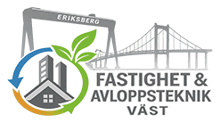
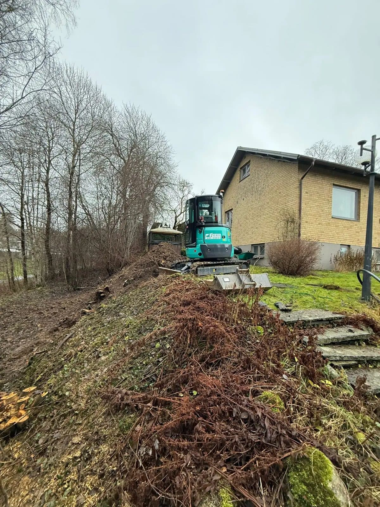
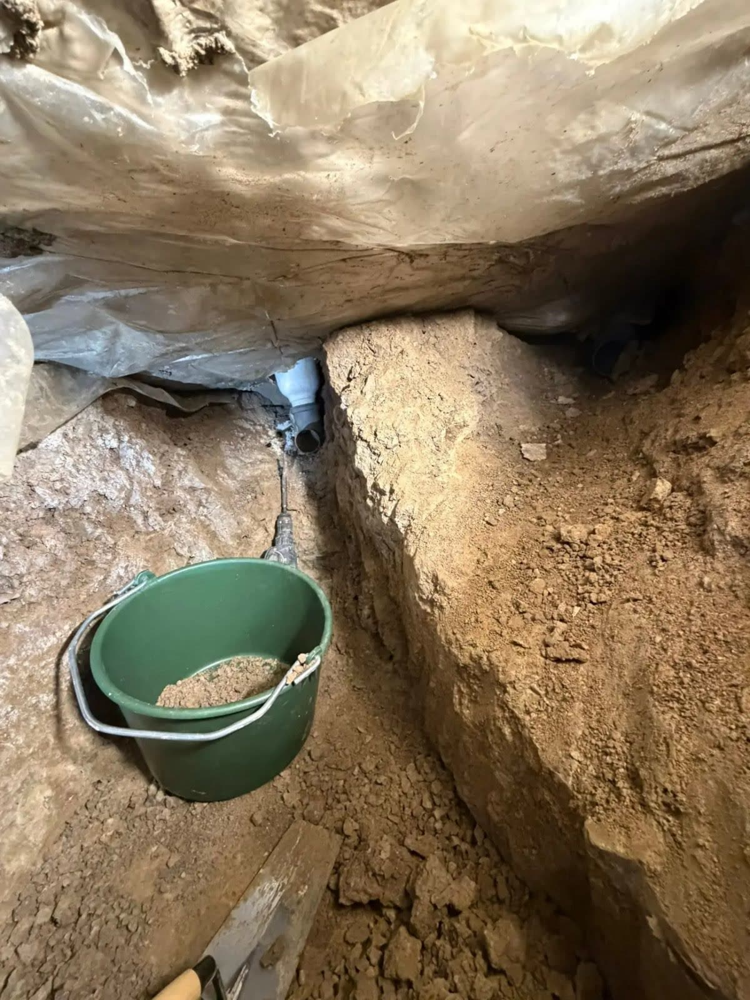
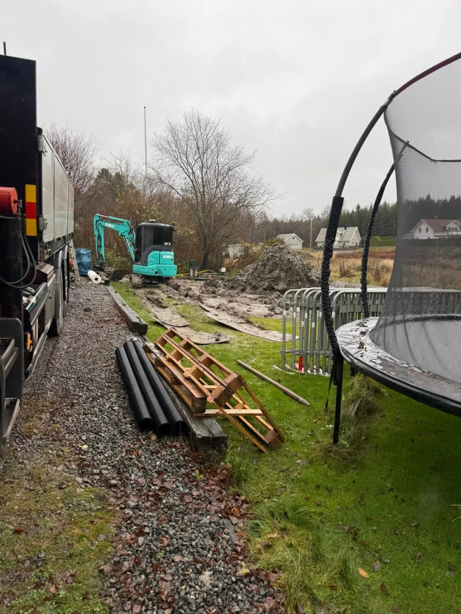
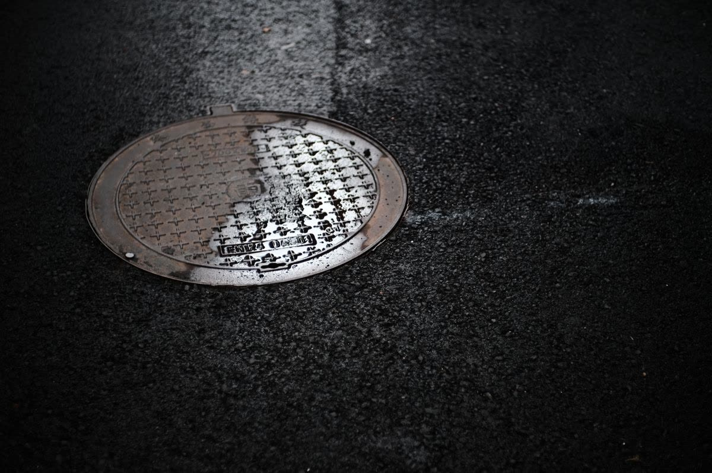
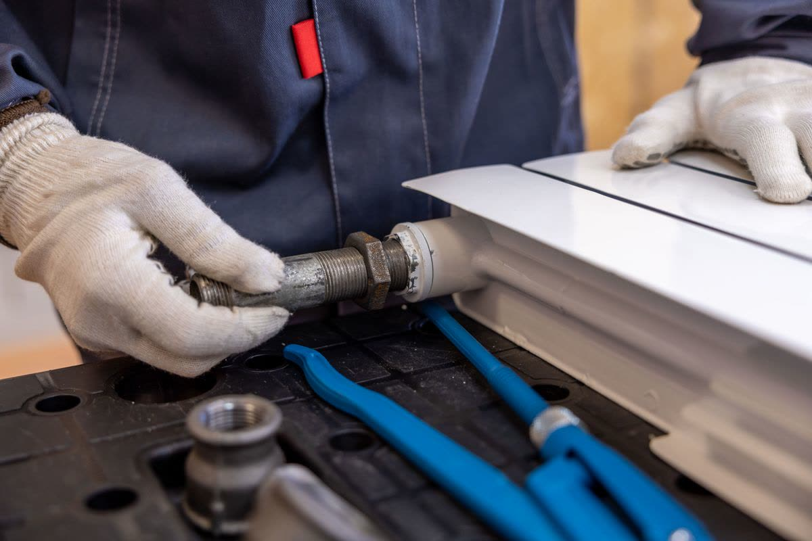

Avloppsteknik VästOm oss
Fastighet & Avloppsteknik Väst AB arbetar med installation, renovering, inspektion och underhåll av avloppssystem.
Fastighet & Avloppsteknik Väst AB är ett företag med bas i Skepplanda som arbetar med installation, renovering, inspektion och underhåll av avloppssystem.
Vi hjälper fastighetsägare att hitta fungerande lösningar för vatten och avlopp, oavsett om det handlar om att undersöka ett befintligt system eller installera en ny avloppsanläggning.

Varför välja oss
Från filmning och spolning till renovering och installation av kompletta avloppslösningar.
Varje fastighet har sina egna förutsättningar. Därför utgår arbetet från anläggningens behov.
Vi arbetar med både felsökning, installation och underhåll av avloppssystem.
Med bas i Skepplanda erbjuder vi tjänster inom vatten och avlopp i Västsverige.




Offertförfrågan
Beskriv ditt ärende så återkommer vi. Du kan också ringa oss direkt.
031-60 01 62Mobil 070-914 97 18 · kontakt@avloppfav.se